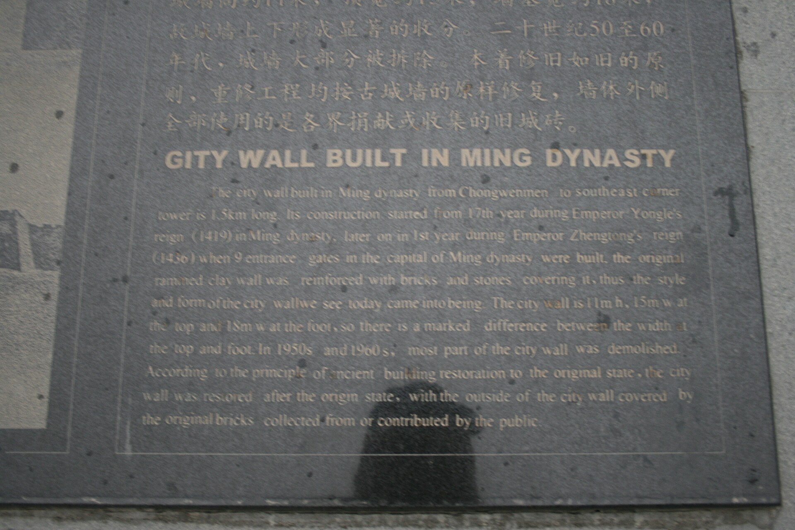

第 26 章
正阳门开的那一刻
门闩被抬起时，木头与木头摩擦的声音并不大。三月十九日黎明前，这声音从正阳门门洞里传出，越过瓮城，落在空无一人的棋盘街上。守门的兵丁没有拔刀。门闩从铁环中抽出，斜倚在墙根，发出一声钝响。城门向内推开，门轴在灰土里碾出两道新痕。接着，城外的人涌进来。没有火把，没有呐喊，只有脚步，密密匝匝，像水漫过堤。石板路上全是杂沓的靴声，涌向各条巷子。
李振声没有听见门闩响。他住在户部值房后的一间小屋里，离正阳门隔着两坊多远。他先听见的是人群奔跑的声响，从城门方向蔓延过来。然后是马蹄，得得地踏过街石，在清晨的薄雾里显得格外清脆。
门被拍响时，他正坐在床沿，靴子已经穿好，外衣搭在椅背上。他没有急着去开门。门是从外面推开的，来的是他所熟识的一位户部书办，姓陈，平日在陕西清吏司走动。陈书办的衣领歪着，脸上没有惊慌，倒像是一宿没睡的样子。他站在门口，说了一句：“正阳门开了。”
李振声问：“谁开的？”
“曹太监。”陈书办停了一下，“守门的兵没有拦。城头上也没有动静。大顺的人从门洞里走进来，跟走亲戚似的，就进来了。”
李振声沉默了一会儿。“是夜里开的，还是天亮开的？”
“快天亮的时候。”陈书办说，“九门都差不多。宣武门、崇文门也都开了。彰义门昨夜半夜就有人出城接洽，天没亮便有队伍进驻。”他把语气压低了些，“我听说，是内官监的人缒下城去，约定今晨开门，以白巾为号。守门兵营里有人看见白巾，就把门闩抬了。”
李振声没再问。他穿上外衣，走出门去。清晨的街道上没有想象中的混乱，只有一群群背着包袱的人往胡同深处走，有人把大门闩死，有人在门口挂出一块白布。他走了几步便停住，站在户部衙门台阶上看正阳门方向。城楼上的旗已经升起来，黄地红边，在晨风里懒懒地翻着。
正阳门这座门，是北京内城的正门，平日只有皇帝出驾才走正门洞。官员从侧门出入，百姓走瓮城门。要打开正阳门，必须经过守门太监、管门千总和提督九门步军统领几层关节。而城破那天的真相是：这些环节没有一道发生武力冲突，也没有一道接到明确的命令。城门的启闭权早已落到一个模糊地带——守门太监手里的钥匙，比九门提督的印信更管用。

关于正阳门的启闭，留下的史料记载并不一致。《崇祯长编》记：“贼攻西直门，不克，转攻正阳门，太监曹化淳开门纳贼。”这话把开门写成军事压力下的一次变节，暗示正阳门是在敌军攻击后才开的。但此说有一个经不起推敲的地方：西直门在德胜门之西，是内城西北面的城门；正阳门在最南端，隔着整个皇城。十五年前，崇祯帝本人初登大宝、手握钥匙的谨慎，与如今守门太监的松弛，成了极辛辣的对照——当初那个藏着丈人麦饼入宫、不肯吃宫中一口饮食的信王，如今连自己京城的门都看不住了。
一支军队要从西直门转攻正阳门，得绕过紫禁城，途中经过的西便门、宣武门都设了守卫。若大顺军真能从容绕城足够半圈而不遇阻击，那只能说明沿途城防已经全部失效。《明史·流贼传》的记法更简单：“三月十九日，贼自正阳门入。”共十一个字，没有提及城门是谁开的。十一个字里只有一种确切的表述：大顺军从正阳门进入北京，而且没有经历交战的痕迹。
《甲申传信录》的记载要细得多，说曹化淳“夜半遣人缒城出，与贼约降”，约定“黎明开门，以白巾为号”。与《崇祯长编》的“开门纳贼”相比，这多了一个环节：开门之前，城中已经有人主动出城联络。所联络的对象不是外地援军，而是城外的敌军。缒城出、夜半、约降——这三个词拼在一起的画面是，在城门还没有开的时候，这条城的内部已经先开了口子。三种记载在时间上互有出入，一说是贼攻不克后开门，一说是临晨开门，一说是夜半已经接上头、到黎明才执行。
但分歧之外有一点是共同的：正阳门是从里面开的，开门的决定不是在城头上被军事压力逼出来的，而是经过事先联系、有约定的步骤完成的。李振声在三月十九日过后很久才陆续听到这些细节。城破的当天上午他拿不到完整的信息，正阳门附近已经换了哨。穿大顺号衣的兵丁站在城门口，手里持着长枪，检查来往行人的路引。没有人拦李振声，他穿的是官服，但官服上的补子已经被他撕掉了，只留下深色的印痕。守卫多看了他一眼，没有问。
那个下午他走回户部值房时，路上看见一群兵丁坐在一处墙根下，抱着膝盖晒着太阳，火铳堆在一旁。其中几个人正分吃一块干粮，掰得很仔细。他站住，看了一会儿。一个老军抬头看了他一眼，又低下去。没有敌意，也没有敬意，像城头换了一茬主人之后，他们便成了无关紧要的人。李振声认得其中一个人，是三月十六日他在西城见过的守城兵。那天他去看口粮配给，认得这名老军的脸，颧骨高，眼窝凹陷，两只手粗得像树皮。
当时这名兵丁排了半个时辰的队，领到一升多碎米，里面有碎砂石，需要拣过才能下锅。李振声问他叫什么，兵丁说姓张，大名没有，营里叫他张蛮子。这是李振声在城破前见过的最后一个守城兵。
他站在十几步外看着这些人，心里想的是那笔账：一百四十七万三千四百两。这是兵部职方司在三月初十造好的欠饷清单上的总数，计京营十二营自崇祯十六年十月至十七年三月的欠饷。另欠折色米豆银二十八万九千两。两笔合计一百七十六万二千四百两。这个数字他核查过。
十五日他拿到兵部的清单时，发现基数与户部饷册对不上——兵部的实数比户部册载少了六万多人，但欠饷的月数却比户部记录多了一个月。这种差异他太熟悉了：京营的军官按册籍虚报兵额领饷，兵部按实到人数报欠，户部按册籍存银拨发，三个衙门各有一本账。到三月初时，谁也不知道京营该有多少兵、该发多少饷。唯一确凿的是缺口的底部：太仓银库三月十五日报存银八千六百两。这个数字不足欠饷总额的百分之零点五。八千六百两银子摆在库房里，占不了多大地方。
李振声最后一次去太仓银库时，看见库房的木板地上落着灰，银鞘拆开后留下的草绳散在墙角，管库的司官坐在门槛上，没有锁门，因为库房里已经没有需要防贼的东西。他说了一句“库空前未有”，司官头也没抬，只嗯了一声。如果只要概括城破的因果，这句话就是：城里没有银子，兵没有隔夜粮，城外有人拿着银子许诺开门。
但李振声在后来的日子里反复想的不是那个数字，而是那个数字到开门这个动作之间的路程。欠饷清单是一张纸，纸上的数字不会自己变成行动。要把一个数字变成城门口掀开门闩的力气，中间至少需要几程传导：欠饷的消息从账上流到兵丁的耳朵里，军营里的不满聚成说话的口气，再冒出一个敢跟城外联络的人把话递出去，最后有人把门闩抬起来。每一步都有人做决定。每一步里都有无数个不出决定的人。而正阳门之所以会开，是因为在每一个节点上，做决定的人都觉得自己没有更好的选择。三月初十以后，守城兵丁的口粮改为三日一发，每次发放一升半。
李振声记得一个细节：三升的米袋上印着“应天府仓”的字样，那是上一次漕粮入京时留下的袋子。按春汛的规律，南粮迟来是新粮岁的常事，但今年连旧粮都见了底。修袋子的工钱还欠着，库房的司官说，没有钱雇人，只能任它破着。
从那天起，城头上的兵丁每天都要面对一个具体的选择：值守这道墙，还是走下墙去找东西吃。那几天的记录显示，每班按册应出六十人的垛口，实际到岗的不到二十人，到了后半夜，又有三五个溜下去。兵部巡视的人看见了，也没人管。没有军法可用，因为按律当斩的逃兵罪，需要一个能执行死刑的的刽子手。刽子手的工食银子，同样三个月未发。
到三月十七日，去职的太监曹化淳已经出现在城头。这是一个信息含量极高的安排。曹化淳在天启年间掌东厂，崇祯初年失势，闲住多年。史料记他“一说崇祯末年开彰义门向李自成投降，一说崇祯末年时已告老还乡不在北京”，如今竟又被起用协同守城，说明皇帝的用人盘子里已经没有任何人可选——在朝大臣们各自忙着收拾细软，兵部堂官们坐在衙门里等消息，京城里能够直接指挥九门太监的人手已经空了。
曹化淳往正阳门一站，守门太监们便有了一个可以听命的头领。那天夜里他做了什么，史料没有记。但在三月十八日傍晚之前的那个时辰内，从正阳门城楼到瓮城，指挥系统已经收缩到此人一身。
李振声在三月十七日清点守城人员时见过曹化淳一面。他穿一件旧青布直身，戴网巾，站在正阳门内，正与几个太监说话。李振声听不清对话的内容，只认得曹化淳的手势：挥了一下，像赶苍蝇，然后从袖口里抽出一串钥匙，掂了掂，揣回兜里。那串钥匙，后来经他手递给了进城的大顺军官。
另一个太监杜勳早已投降，据说曾在大内对同僚宣传李自成军势，又说“吾党富贵自在也！”，可见宫中人心早已瓦解。
再看一遍《甲申传信录》里“夜半遣人缒城出”这句话。缒城，意思是把绳子系在人身上，从城头悬下去。这个人不在城门钥匙的分发序列里，不需要经过提督府，不需要行军令。绳子从城垛口放下去，就是一道手写的命令，绕过一切指挥环节，直通城外。而命令的内容，是这个体系的自我否定——开门降敌。这当得上一桩整饬的衡量：当一道命令的传递速度低于其失效速度，城防的所谓指挥链条便成了摆设。
在三月十八日之前，李振声还没有听说过“命令半衰期”这个词，这个概念要再过几个世纪才被后人用作分析工具。但他已经在亲身感受它的含义。正月初一那天，朝廷的诏令从乾清宫传到午门外，大约需要半炷香的工夫，到那时还有意义。二月中，诏书传到外城时，已经有人在街巷里公开讥讽。三月初，驿卒被饥民拦住，抢走了诏书上的黄绫。到了三月十八日，命令已经传不出去——传出去的不是抵达时已经旧了的东西，而是抵达后直接失去了效力。
皇帝的调兵令在九月之前已经出了京，但各地援军的反应足以说明问题。唐通在居庸关降了敌，刘泽清在路上徘徊不进，宣府总兵王承胤接到兵部急令的当天就回了公文——公文内容不是“已抵某处”，而是“请饷”。没有银子，一兵不发。命令的链条被一个数字掐断了：按照规定，调兵需要开拔银和先行粮料，先行的钱粮不发足，任何军官都不敢把兵带走，因为没有兵饷的兵在路上会哗变。兵部开不出银子，就只能给援军开“空头令”——行文照发，但它缺少可以兑现的东西。
到了三月十八日，兵部还在等一封山东的塘报，而那封塘报永远不会到。所以当曹化淳的绳人缒下城墙，去与城外的大顺军约定开门的时辰时，他其实只是把这个秩序的最后一步执行完了。在一个命令传递已经失效的体系里，唯一还能起作用的命令是被执行者自己愿意执行的那种。曹化淳愿意。守门的兵丁也愿意。城里的百姓甚至更早知道这件事会来。
三月十八日傍晚，正阳门瓮城的城门已经关闭。按惯例，关闭后直到次日清晨，任何人不得进出。但那天夜里，李振声后来辗转听到了一个细节：城门虽然关了，门闩没有完全放到底。据兵部一名巡检说，他看见门闩一头搭在承托上，另一头却悬空着，像是一个匆忙收工的人随手放的。他没有多想就回去了。他没往上报。这个没有收紧的门闩，像是一个约定俗成的姿势——今夜不设防。
当日下午，李自成军已开始攻西直、平则、德胜诸门，守军或逃或降，而内城的混乱更甚于外城：太监张殷劝皇帝投降，被崇祯一剑刺死。到了这个时辰，皇帝的剑已经杀不到任何开门的人了。黎明前，门闩被抬起来的时候，正阳门城楼上下没有传来任何示警。没有号角，没有哨声，没有“贼至”的喊叫。住在正阳门附近的居民后来回忆，只听见好几拨脚步声过去，然后便是城门轴转动的沉闷声响。
有人醒着，没有人起身。李振声在三月十九日上午亲眼看见的第一件安民告示，是大顺官僚写的，落款为“永昌元年三月十九日”。告示贴在户部衙门前的一面照壁上，浆糊还没干透，边角翘起。他站在人群外面看了一会儿，没有挤进去。告示旁边还有一张纸，墨迹较新，是城里一家米行的启事，说米价照旧，与前日相同。李振声知道这家米行，五日前他在这里问过价，每石四两八钱。那时他算过，按这个价买断太仓的八千两存银，只够买不到一千七百石米，折合口粮只够九门守军一天的用量。
开城之后，据说新来的政权按“不抢民，不占屋”的口令行军，从正阳门入城，直接进占各处衙门。他们先占了兵部，又占了户部。户部当值的那名主事几乎没见到新主人的面孔，大顺的衙役让他把账册留下，人可以走。他放下钥匙，走出门去，没有人和他说第二句话。那把从曹化淳手里递出去的钥匙，后来进了城里的衙署，落到一个穿着大顺官服的人手里。
那个人将它插进库房门的锁孔，旋转半圈后确认能打开门，才把钥匙从锁里抽出来，挂在自己腰间的革带子上。这个动作李振声没有亲见，但他听人说起过。
三月十九日晚间，他收拾了值房里属于自己的东西，从户部后角门走出去。街上已经点起灯，不是旧制，灯笼换成了新制的白纸灯，上面墨笔写着一个“顺”字。李振声在岔路口站了一会儿，望向正阳门的方向。门楼上的梁柱轮廓已经被夜色吞没，只有城头上每隔数十步悬着的一盏灯，排成一线，映着黄底红边的旗。那排灯像是新秩序的眼睛，在看这座他生活了多年的城。他转身走进胡同，听见身后远远地传来一阵锣声，有人高声喊了句什么。他站住，听了听，没有听清。
第三天的正午，李振声在城西一间借住的屋子里翻开一本从户部带出的账册。那本册子的封皮已被磨破，翻开来是崇正九年（本书用“崇祯”避讳体例？此处按习惯写“崇祯”）的京营饷册。他翻到中间某一页，上面录着当年的饷银发放记录：一营实发银一千二百两，按册兵员四百人，人均三两。
那时米价每石一两二钱。三两银子，买米二石五斗，够一个人吃四个月。他又算了算今年这笔账：京营兵每人实领月饷不足三钱，米价按每石四两八钱算，三钱银子只够买六升米。六升米，一个人吃不了几天。崇祯末年与崇祯九年之间，隔着的是什么，就在这组数字里。
四月里某天下午，他坐在院子里的木凳上，将这段日子发生的事逐一想了一遍。他记得自己关在值房里核过的每一份账，也记得正阳门门洞里那道没有放到底的门闩。
他想，这城的防线其实不是被攻破的。从它发不出军饷的那一天起，从守城的兵亲眼看见兵部官员开始清理家产的那一天起，从曹化淳踏出那一步起，城就已经开了。当兵的清点欠饷、无米下锅，太监连夜缒城、约定白巾为号，这时的城墙便只剩了一层外皮。门闩不过是被那层皮裹着的一截木头。正阳门开的那一刻，没有号令，也没有冲杀，只有一个人把门闩抬了起来。